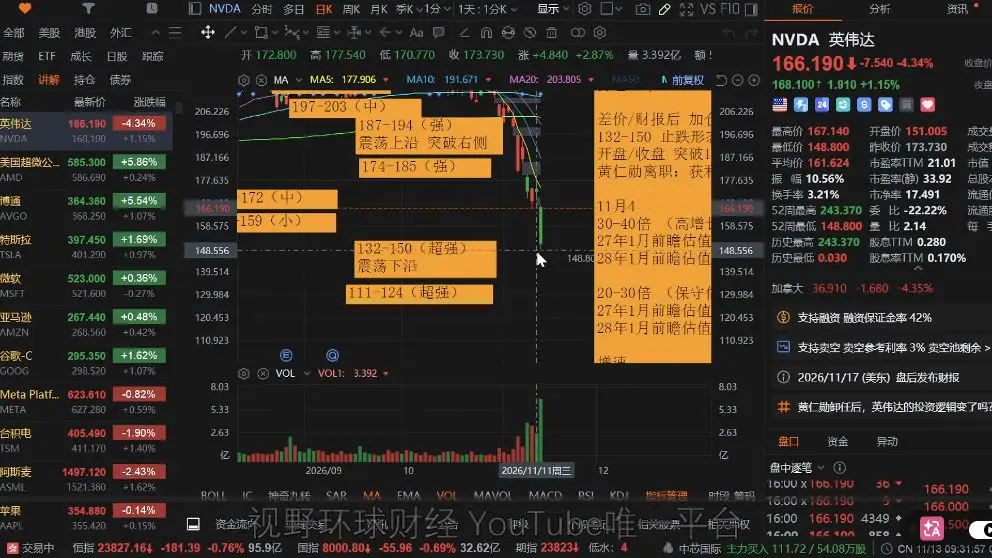
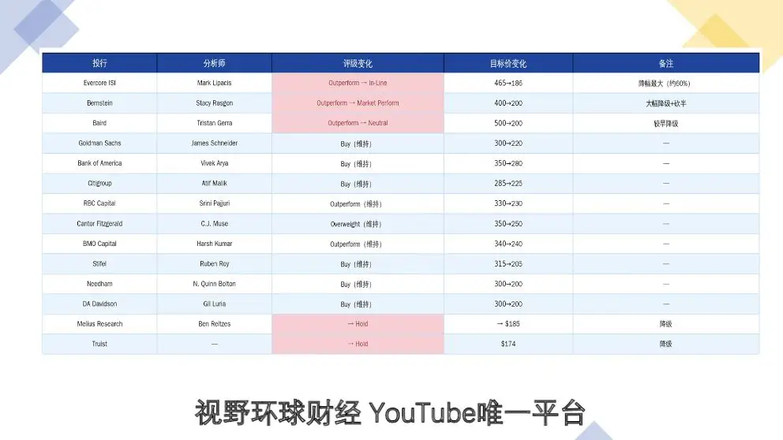
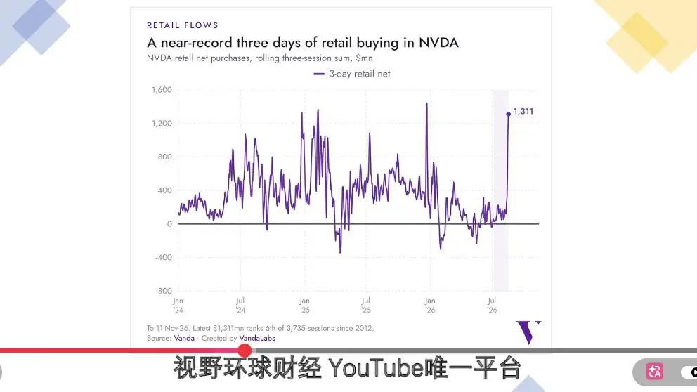
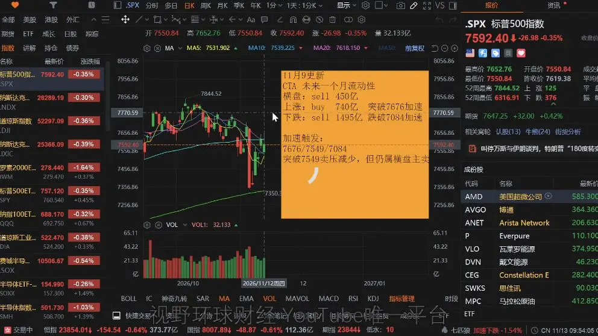

美股 黄仁勋辞职，散户抄底！NVDA持仓计划补充！QQQ空头3年新高，对冲基金低仓位，会配合追涨吗？本期重点10 组 · 11 条收盘广度与盘中反弹1管理层变动后的第一轮定价1卖方目标价重估1财报前的波动区间1散户资金涌入1个人仓位的离场条件1ETF 资金与对冲基金仓位2QQQ 空头和反弹条件1散户托底的持续性1标普触发位与增量买盘1收盘广度与盘中反弹四大指数小幅收跌，纳指盘中一度下跌约 1.35%，收盘前收复大部分跌幅。1 条收盘广度与盘中反弹四大指数小幅收跌，纳指盘中一度下跌约 1.35%，收盘前收复大部分跌幅。▶回听00:00—01:05对应正文 ↗管理层变动后的第一轮定价节目讨论黄仁勋辞职后的第一轮市场反应。1 条管理层变动后的第一轮定价节目讨论黄仁勋辞职后的第一轮市场反应。▶回听01:05—03:00对应正文 ↗卖方目标价重估节目汇总的 12 个月平均目标价降到约 217 美元，较原先约 343 美元下调约 37%。1 条卖方目标价重估节目汇总的 12 个月平均目标价降到约 217 美元，较原先约 343 美元下调约 37%。▶回听03:00—06:05对应正文 ↗财报前的波动区间132 美元到 194 美元是财报前很宽的震荡区间。1 条财报前的波动区间132 美元到 194 美元是财报前很宽的震荡区间。▶回听06:05—07:45对应正文 ↗散户资金涌入开盘前半小时散户净买入 NVDA 约 1.11 亿美元，约为常态中位数 270 万美元的 41 倍，超过过去第 99 百分位约 4900 万美元的两倍。1 条散户资金涌入开盘前半小时散户净买入 NVDA 约 1.11 亿美元，约为常态中位数 270 万美元的 41 倍，超过过去第 99 百分位约 4900 万美元的两倍。▶回听07:45—11:38对应正文 ↗个人仓位的离场条件如果财报前反弹到 172–174 美元，我会优先执行退出计划。1 条个人仓位的离场条件如果财报前反弹到 172–174 美元，我会优先执行退出计划。▶回听11:38—17:04对应正文 ↗ETF 资金与对冲基金仓位按节目引用的摩根大通数据，上一周股票 ETF 日均买入额约 200 亿美元，周一约 300 亿美元。2 条ETF 资金与对冲基金仓位按节目引用的摩根大通数据，上一周股票 ETF 日均买入额约 200 亿美元，周一约 300 亿美元。▶回听17:04—19:00对应正文 ↗ETF 资金与对冲基金仓位散户抄底已提供承接，但机构仓位在此前数月累积增幅中回吐近九成，是否加回仓位取决于指数与各自的风险限额。▶回听17:04—19:00对应正文 ↗QQQ 空头和反弹条件QQQ 的空头仓位升至 2023 年以来高位，低仓位和高空头可以放大反弹。1 条QQQ 空头和反弹条件QQQ 的空头仓位升至 2023 年以来高位，低仓位和高空头可以放大反弹。▶回听19:00—21:08对应正文 ↗散户托底的持续性散户逢低买入有两个前提，即还留有资金，并有信心继续买。1 条散户托底的持续性散户逢低买入有两个前提，即还留有资金，并有信心继续买。▶回听21:08—22:50对应正文 ↗标普触发位与增量买盘标普当时在约 7592 点，距离 CTA 的 7676 点触发条件还有一段。1 条标普触发位与增量买盘标普当时在约 7592 点，距离 CTA 的 7676 点触发条件还有一段。▶回听22:50—24:50对应正文 ↗这期涉及哪些股票与内容？NVDA主讲节目讨论黄仁勋辞职后的第一轮市场反应。背景提及：无。市场指标：SPX。背景提及不代表对该股票展开分析。CHAPTER 01 · 回听 00:00收盘广度与盘中反弹四大指数小幅收跌，纳指盘中一度下跌约 1.35%，收盘前收复大部分跌幅。标普成分股约 376 只下跌、125 只上涨，11 个板块仅能源上涨，盘中修复并未带来同样强的市场广度。CHAPTER 02 · 回听 01:05管理层变动后的第一轮定价节目讨论黄仁勋辞职后的第一轮市场反应。NVDA 盘中最多跌约 14%，在 150 美元下方触及 132–150 美元技术区间后获得买盘，最终收跌约 4%。AMD 和博通延续上涨。放大查看 ↗NVDA 原图 · 管理层变动后的第一轮定价原视频 01:50回听此处CHAPTER 03 · 回听 03:00卖方目标价重估节目汇总的 12 个月平均目标价降到约 217 美元，较原先约 343 美元下调约 37%。不同券商在新情景下调整的速度和幅度不一，过去视为较低的 200 多美元区间，已被多家机构重新视为一年目标的主要分布区间。放大查看 ↗NVDA 原图 · 卖方目标价重估原视频 03:30回听此处CHAPTER 04 · 回听 06:05财报前的波动区间132 美元到 194 美元是财报前很宽的震荡区间。150 美元以下出现承接只能说明这一档技术位置已得到一次检验，波动仍大，估值区间要随财报后的预期一起更新。放大查看 ↗NVDA 原图 · 财报前的波动区间原视频 10:50回听此处CHAPTER 05 · 回听 07:45散户资金涌入开盘前半小时散户净买入 NVDA 约 1.11 亿美元，约为常态中位数 270 万美元的 41 倍，超过过去第 99 百分位约 4900 万美元的两倍。周一至周三，六只两倍做多英伟达 ETF 合计流入约 4250 万美元，处于历史第 99.8 百分位。CHAPTER 06 · 回听 11:38个人仓位的离场条件如果财报前反弹到 172–174 美元，我会优先执行退出计划。若没有到这个区间，就按 17 日财报发布后的安排，计划在 18 日退出。这是本期明确更新的个人持仓纪律。CHAPTER 07 · 回听 17:04ETF 资金与对冲基金仓位按节目引用的摩根大通数据，上一周股票 ETF 日均买入额约 200 亿美元，周一约 300 亿美元。11 月 5–6 日杠杆 ETF 吸引近 50 亿美元，按三倍敞口估计约 150 亿美元。散户抄底已提供承接，但机构仓位在此前数月累积增幅中回吐近九成，是否加回仓位取决于指数与各自的风险限额。CHAPTER 08 · 回听 19:00QQQ 空头和反弹条件QQQ 的空头仓位升至 2023 年以来高位，低仓位和高空头可以放大反弹。如果指数过不了压力区，这些资金也可能继续等待，拥挤空头本身不保证逼空。CHAPTER 09 · 回听 21:08散户托底的持续性散户逢低买入有两个前提，即还留有资金，并有信心继续买。机构尚未回补时，一旦其中任一条件恶化，市场容易缺少承接。我会把这一点和指数的实际突破情况一起看。CHAPTER 10 · 回听 22:50标普触发位与增量买盘标普当时在约 7592 点，距离 CTA 的 7676 点触发条件还有一段。若指数突破，趋势资金的买入可能与空头回补、低仓位机构加仓形成合力。放大查看 ↗SPX 原图 · 标普触发位与增量买盘原视频 23:59回听此处SOURCE MATERIAL完整转录与回听原视频：美股 黄仁勋辞职，散户抄底！NVDA持仓计划补充！QQQ空头3年新高，对冲基金低仓位，会配合追涨吗？机器原稿可能含同音字与数字单位错误，保留用于对照。播放00:0027:241×1.25×1.5×2×静音展开完整转录下载 TXT ↗下载 SRT ↗查找转录内容00:00大家好,欢迎回到视野环球财经,我是Ryno。现在是美东时间,26年11月12号,周四晚上的8点25分。00:10今天呢,四大指数是小幅收跌,纳指呢,是收复了盘中的大多数跌幅,最低的时候跌了1.35%,但是今天标普的广度并不好啊,尽管不少的股票呢,都是从盘中的低点反弹,但是成分股下跌的个股数量达到了300%,00:30176支,那么只有125支上涨。标普的11个板块呢,今天也只有能源一个上涨,10个板块下跌。00:40好,咱们呢,今天的重点还是要围绕着英伟达啊,包括像大盘的流动性和年底潜在的机会啊,和大家来讲一讲。00:51同时呢,今天给大家要补充一个关于英伟达的持仓计划的更新啊,因为今天呢,00:58从买盘的盘面上比预期中要更快一些啊,所以呢,有一些提前的补充啊,但是这个清仓的这个决定没有变化啊,等会儿跟大家讲一下。01:10好,呃,首先呢,我们说一下啊,英伟达的CEO黄仁勋的去留问题,现在呢,是已经尘埃落定。01:19黄仁勋选择了辞职,那么现在首席财务官CFO是担任临时的CEO,公司表示说呢,将会启动CEO的正式的人选的临选工作。01:32内部和外部的候选人都在考虑之列。01:36这个消息一出啊,今天英伟达的股价今天呢,是在盘中最多的时候跌了14%,但是呢,它在150的下方,找到了技术性的支撑啊,就是这个132到150的墙的震荡下眼,找到了支撑。01:56随后呢,是大量的资金涌入,技术性的反弹啊,收复了其中大多数的跌幅,最终只收跌了四个点。02:06英伟达掉的这个肉呢,还是涨到了AMD和博通身上啊,今天呢,是继续大涨了5%,那么这两个股票呢,昨天已经给大家讲过了,今天我们就不再重复。02:18好,那么既然黄连勋的事情尘埃落定,但是呢,随着后面的一些其他的调查的进行,英伟达公司的麻烦正在增加。02:30那么美国司法部的多项调查现在都可能指向了英伟达啊,这个后续咱们的节目里会持续的跟踪。02:39那么关于英伟达,这个黄连勋在辞职之后啊,对于机构来讲,他们的看法怎么样呢?02:46今天呢,给大家列出了美国的投行和分析师的最新的评级,特别是在这个辞职之后的他们一些最新的变动情况。03:00大多数的投行或者分析师呢,很快是做出了评级或者是目标价的调整。03:08最新的评级啊,整体上评级仍旧是以买入为主,但是持有的比例开始上升。03:17就是从之前的买入,有一些是下调到了持有,几乎是没有卖出的,几乎是没有卖出的。03:24这是首先分析师的评级。03:26但是,12个月的平均的目标价已经降到了差不多217。03:34那么,在黄连勋辞职之前是多少呢?03:36差不多是343,大幅下调了差不多37%左右啊,非常大的一个调整。03:45其中有几个评级的理由,我给大家稍微的念一下。03:50高盛写道呢,即使职能层面拥有强有力的领导,03:54那么在缺乏核心,富有远见的领导者的情况下,公司可能也难以像过去那样灵活的运作。04:03英伟达可能会履行与其他公司签订的现有的合同承诺,但该公司可能更难像以前那样与生态系统合作伙伴就新的多方投资进行谈判。04:16将该股的目标价从300美元下调至220美元,但是维持了买入瓶颈。04:23他们这个买入瓶颈目标价通常都指的是12个月啊。04:27还有呢就是MR的分析师,他将英伟达的股票下调至持有,之前是买入,并将目标价从315美元大幅下调至185美元。04:41理由是,尽管由于人工智能需求依旧强劲,但该公司的业绩可以继续保持良好势头,但是由于管理层变动,公司可能会迎来一些新的变化。04:57博文斯坦的分析师指出说呢,他认为目前股票的估值相当的便宜,不到未来12个月预期收益的12倍。05:06尽管逢低买入可能很诱人,但他补充说,他认为现在并非买入的时机,并且预计会有更多关于内部问题,以及业务相关的新闻头条,新的政府调查等消息的爆出。05:23所以呢,他将股票的评级从跑赢大盘下调至与大盘持平,并且将目标价从400美元大幅下调至200美元。05:34这是其中的一部分啊,其实你可以看到在目前的这张表格上,很多之前12个月的目标价,比如说400多调到100多,调到200,500调到200,300多调到200,300多调到280,280调到225,05:51还有呢,调到大概基本上都是维持在200多一些吧,不超过这个200,这个30块左右,是主要的一个调整方向。06:02好,这个说明什么呢?说明啊,黄仁勋的辞职,让之前的分析师的12个月的目标价,认为200多块钱是英伟达的一年的阶段底部,变成了在黄仁勋辞职之后,成为了一年12个月的阶段性的顶部。06:24就是200块钱啊,到230,40块钱这个区间。06:28好,呃,那我说一下他的基本面啊,和对他的一个看法。06:35首先呢,从这个基本面上来讲,由于我们之前也讲过他未来的这个业绩情况啊,这个业绩呢,他暂时是不会随着,就是短期中期业绩,不会随着英伟达,06:48之前CEO的离职啊,发生改变,所以基本面上他肯定是大幅低估的,啊,这是肯定的事情。06:56那么,技术面呢,在下方150之下,被强力的埋起来,也得到了技术面的验证。07:05所以,在财报出来之前,他的震荡区间从132到194,区间很大,因为市场的压注也很大,没有办法缩小啊,大家说这么大的区间,那不等于没有吗?07:21有,比没有好,啊,这就是他的一个震荡区间,好吧,所以呢,没有办法缩小,啊,这个地方因为就是这么一个结构形态。07:29好,还有一个就是,由于投机盘正在博弈,同时呢,随着可能后续不断的有国会相关的一些消息的爆出,07:40那么,英伟达肯定他的波动会变得极其的不稳定,这是他目前的一个情况哈,07:48基本面,低估,技术面,现在下方有强力的支撑,震荡区间在这里,同时波动变得极其的不稳定。07:57好,那么,在这种情况下,我们说今天这么大的买盘,谁在其中贡献了重要的力量呢?08:07散户肯定是其中重要的一股力量啊,咱们来看一看今天散户的买入行为。08:18那么,根据这个零售交易Wanda Research的分析呢,散户投资者对英伟达的CEO黄仁勋的辞职啊,做出了非常迅速的回应。08:34而且呢,创下了英伟达有史以来最大的开盘的买单。08:40在交易的前半个小时内,净买入了1.11亿美元,净,就是买入的减去卖出的。08:48它这个有多大呢?08:50是正常开盘前半个小时的41倍。08:55英伟达开盘净零售买入额的以前的中位是多少?是270万美元。09:01第99百分位是4900万美元,就是已经算是比较高的了。09:06但今天是1.11亿美元,是历史上这个第99百分位的两倍多。09:14那么更早一天的,周二的开盘啊,更早两天的时候,散户在半小时内买入了9300万美元,目前排名第四。09:25也就是说呢,英伟达历史上四次最大的散户开盘买盘中,有两次都出现在过去的三个交易日。09:35非常的猛哈。09:37好,还有就是,这个细节中呢,有一个细节,就是也可以值得推销的。09:44比方说这个1.11亿美元的净买入额呢,它是来自于7.99亿美元的零售总额。09:51那么你粗略的算一下,差不多呢,就是零售者在投资30分钟内买了4.55亿美元的英伟达股票,同时呢,卖出了3.45亿美元。10:02换句话讲,投资者在开盘时,每买入4美元就卖出了3美元。10:07说明,卖出的同样多,说明抄底的散户还是会多一点点,会比卖出的这个位置。10:16好,还有一点。10:19在过去的几天中,英伟达在周一、周二和周三都是美国市场上散户购买最多的股票,分别排名第二的股票的9.7倍、14.4倍和3.7倍。10:33截至周三的收盘,三天累计的净买入额是13.1。10:39那么是自2012年有记录以来,3735个交易中的第六高的水平。10:46更加夸张的是,英伟达仅这个星期就吸收了美国所有股票和ETF散户净买入额的61%。10:56基本上都是大家能买的,都给砸到了英伟达上啊。11:01当然,这里边还有杠杆,那也不能缺席嘛。11:07逢低买盘呢,已经蔓延到英伟达的杠杆产品。11:10周一到周三,散户向六支两倍英伟达的ETF总共投入了4250万美元。11:18这是有史以来的第五大三天的资金流入,位列历史的第99.8百分位。11:24唯一能和他媲美的杠杆多头的需求的激增呢,11:29是在之前出现过的这个Deep Seek那个恐慌上,不是有一个大的一个杂盘吗?11:33那个是历史最高啊。11:35所以,这么去理解啊,就是散户呢,在过去的三天,11:41甭迪吸纳了足够多的英伟达的筹码。11:45差不多在100,这个大概180块钱以下左右吧,11:51一直到150区间,这个区间吸了足够多的筹码。11:56那么,现在的问题是,11:58英伟达历史上在下个星期17号的财报是第一份没有黄仁勋主持的财报。12:07不知道会是什么样的一个结果哈。12:10这个呢,咱们就没法猜了。12:11咱们要看看新的这个CEO,12:14戴CEO吧,他的这个主持,12:16关于这个财报的这个表现。12:20好,呃,我呢,12:22接下来要说一下关于我仓位的一些新的更新的补充。12:29昨天的节目里,我已经讲过哈,12:31呃,只要是黄仁勋离职,12:34无论你是被这个罢免的呀,12:37还是现在他是主动辞职的,12:40总之呢,是离开了CEO的这个岗位,12:42我会在17号的财报发布之后,12:46在18号清仓离场。12:49今天呢,我会补充一个,12:51补充什么呢?12:52由于这一波的反弹非常的快啊,12:55速度很快,12:56买盘非常的不错。12:58从规避财报风险的角度,13:02如果在财报之前,13:05英伟达反弹到了172到174这个区间,13:10就是我之前跌破174第一次减仓的那个位置,13:15那么相当于呢,13:17它已经化解了大部分的技术性的,13:21就是这个目前的这个损失。13:24那这种情况,13:25相当于已经提前完成了大部分的任务,13:28我会提前清仓离场,13:31不会再去等那个财报了。13:33好吧,跟大家讲清楚啊,13:34财报之前,13:36如果能反弹到172到174这个区间,13:40我会提前全部清仓。13:43如果没有到,13:44那就继续拿着等财报。13:45好吧,13:46这是我的一个新的补充计划,13:47希望大家能够,13:49这个今天,13:50我相信最近跟节目的朋友呢,13:52应该是会密切地跟踪关于英伟达的这个消息的。13:56好,13:57那么至于这个清仓的这个理由啊,14:01其实,14:02我昨天你说的很清楚啊,14:04我再次的强调,14:06请大家务必要保持独立思考,14:09独立判断,14:10不要盲目跟风啊,14:12因为我是根据我的成本,14:15以及我个人对于英伟达,14:17对于黄仁勋离职后的理解去做的一个清仓行为。14:22我也谈到了,14:24英伟达昨天呢说,14:25在中期2028年之前,14:27他的护城河还是比较深的,14:30难以撼动,14:31特别是近了两年的这个订单,14:33他实际上已经是被抢购一空的,14:36所以两年的业绩看起来还是比较稳定的。14:40那么风险是什么?14:41风险就是在失去黄仁勋之后,14:44我个人啊,14:45再次强调这是我个人的看法,14:48对英伟达的未来,14:49公司的治理,14:51不再抱有像之前那样的长持信心。14:55再加上呢,14:562027年,14:57对AI行业的投资,14:58它本身的风险也会累积嘛,15:01迟早也得缩小AI投资的敞口,15:03那正好现在黄仁勋这个事情,15:06提前了,15:08对吧,15:08往前面更进了一步,15:10那我就利用这个契机正好去果断清仓。15:15好,15:15至于腾出来的仓位,15:17未来我会要加到哪些板块和股票上呢,15:21后面再跟大家沟通,15:22好吧,15:22今天我就没办法跟大家去直接讲一些更细节的一些计划了,15:27未来如果我思考的更成熟了,15:30然后再和大家进行提前沟通,15:32这是咱们节目的一贯的风格,15:34反正大家放心,15:36我一般都是提前讲哪些股票,15:40那些板块我为什么会买,15:42大概要买多少,15:44然后看好的理由是什么,15:45风险是什么,15:47大概的价位是什么,15:48这个我会说得清清楚楚啊,15:51好,15:52还有呢就是,15:54还有还是要对那个继续持有和看好英伟达的朋友要多说几句话,16:00现在呢如果继续坚定看好英伟达持有的朋友啊,16:04这个大家不要说看到我清仓了,16:06你就担心,16:07不用担心哈,16:08英伟达呢作为一只非常重要的股票,16:11我依旧会在平常啊,16:13包括及时的更新它的一些基本面,16:16技术面,16:16消息面,16:17还有资金流向,16:18尽量为大家打好辅助,16:21好吧,16:21这一点呢我相信大家应该是有信心的啊,16:23因为我平常讲的很多股票,16:26绝大多数的股票啊,16:27其实都不是我的持仓股啊,16:29是因为大家有需求,16:30他们在市场上又是非常重要的玩家,16:33所以我都会拿出来和大家讲,16:35所以大家不必担心,16:37好,16:38那么我们看完了英伟达的资金流动情况,16:41接下来呢咱们来聊一聊整个的QQQ的情况,16:45还有目前大盘到底是个什么节奏,16:48那么现在这个情况看起来呢,16:51突发事件有点多,16:53那么这个年底的圣诞行情啊,16:55还有这个大家比较期待的指数往上走一走,16:59还能发生吗,17:00会有什么样的一个条件下可以发生呢,17:04好,17:04咱们还是对着图表来讲,17:10大家看一下啊,17:12这个是摩根大通的图表啊,17:15根据摩根大通的数据显示啊,17:18上个星期股票ETF的日均买入额,17:22高达200亿美元,17:25周一更是加速到300亿美元,17:2811月5号到6号,17:30杠杆ETF吸引了近50亿美元的资金流入,17:34那就相当于是150亿美元的一个杠杆敞口,17:38而反向的ETF呢,17:39在过去一周则遭遇了差不多约50亿美元的资金流出,17:44尽管人工智能市场现在震荡非常的剧烈,17:48但是看得出来买盘多头依旧强劲,17:52而其中重要的买家,17:54还是散户啊,17:56散户投资者再次成为了股市在下跌过程中重要的支撑力量,18:02好,18:03这个是我们说整体的大概的ETF的情况,18:08我们来看一下杠杆的情况,18:11杠杆的大幅回落啊,18:14非常的大,18:16那么蒙哥纳通的他们这个数据统计呢,18:18截止到11月5号,18:19整个的杠杆股票ETF相对于标的市值的敞口,18:24已经回吐了4月到6月期间累积增幅的近90%,18:29所以轻杠杆的行为也非常的彻底,18:34所剩杠杆仓位不多了,18:37所以近期杠杆ETF买盘的反弹,18:40它是建立在之前已经大幅缩水的基础之上的,18:44那么之前推动上涨的杠杆已经是被基本清除了,18:49相当于又重新布局了第二轮杠杆,18:51那么相当于是新一轮的杠杆的建仓周期正在发生,18:58好,18:59再看这张图,19:01但建仓归建仓,19:03市场有多也有空,19:06QQQ的空头的头寸,19:09已经飙升到了2023年以来的最高水平,19:13QQQ已经飙升到了2023年的最高水平,19:19但这里我要强调一下,19:21这个空头头寸的极高水平,19:23不代表着机构在大幅看空,19:27因为通常机构有的时候会做一件事情,19:30对冲基金会做多个股,19:33然后去做空大盘进行对冲,19:37这是一个行为,19:39所以它有可能会代表着在某一类个股上,19:42它正在积极的做多,19:45积极的在做多,19:47只是用大盘对冲风险而已,19:49所以它这是一个对冲交易的一个模式,19:53所以我不能说,19:54因为QQQ就是被做空的特别多了,19:57所以大盘一定要下跌,19:59不是这个逻辑,20:00但是这里面有另外一个逻辑,20:03是会有可能发生的,20:05也就是,20:06仓位布局现在的情况,20:08应该是比较敏感,20:09怎么敏感呢,20:11摩根达哈通的说法是这样,20:12他说,20:13对冲基金之前已经完成了大幅度的去风险化,20:17咱们节目里之前也给大家讲了,20:18关于对冲基金的持续的仓位变化,20:20包括截止到上周,20:22他们还在降这个杠杆,20:24那么他们的风险,20:25敞口已经远低于之前水平,20:29所以摩根达哈通认为,20:30假设散户的持续支持,20:33在11月份能够稳定住人工智能股票,20:36不再继续下跌了,20:38就有可能迫使对冲基金从11月下旬开始重建仓位,20:45那么这个就会为动能和杠杆已经重置的市场,20:48带来第二波的买盘的需求,20:52也就是说呢,20:53散户正在成为人工智能交易的下一个阶段搭建的桥梁,20:59就是勇敢的在里边去接住,21:02让它止住下跌的速度,21:05那么如果对冲基金开始重建仓位,21:08那么市场可能会从强制抛售转为强制买入,21:14那是不是一定会发生,21:16风险在哪里,21:17风险在于投资机构者回归之前,21:21就机构投资者回归之前,21:23散户逢低购买的弹药还能维持多久,21:29或者说你们手里的弹药啊,21:33大概还有多少信心能够在如果发生了继续的下跌,21:38仍旧维持买入,21:40两种情况,21:41第一个就是你还有没有仓位,21:42第二个就是你还有没有信心,21:44这是两个事情啊,21:46好,21:47那么我简单的把它的这个事情我翻译一下吧,21:50这个说起来太恶口了,21:54简单讲呢,21:54JPM的意思就是说,21:56对冲基金现在呢,21:57仓位是不足的,21:59由于之前,22:00其实他们不是也收了挺大的损失吗,22:01那今年白干啊,22:03上半年干的,22:03他们下半年基本上回吐完了,22:05对吧,22:05那个基金经理,22:07那很多奖金都打了水漂了,22:09年底还有两个月,22:10再不好好干,22:11那真的今年就准备喝西北风了,22:14还有呢,22:14今年其实,22:16据我所知呢,22:16其实在今年的十月份,22:18到十月初这一段下跌过程中,22:20很多的对冲基金,22:22基金公司一怒之下,22:24就光是美国的啊,22:25大概炒了一百多位了,22:28炒了一百多个了,22:29做失业了,22:31所以今天对冲基金很难受的啊,22:33这个时候仓位又不足,22:35然后行情现在处于一个震荡的位置,22:38眼看着呢,22:38散户还在买,22:40又没有太深跌到太多,22:42所以简单讲就是,22:43对冲基金现在仓位不足,22:45那么连底可能会出现第二波买盘,22:49强制抛售可能已经基本结束,22:51只是说呢,22:52下一个问题,22:54追踪基金何时会入场,22:56有没有可能被迫入场,22:58那么这个,22:59就要看散户能不能坚定的持有支持到季节性的强势和圣诞行行的开启,23:06或者是有其他的合力啊,23:08比如什么合力呢,23:11追涨杀跌的CTA,23:13对吧,23:14它就是其中一个重要的,23:16有可能会推动行行加速的一个东西嘛,23:197676,23:20今天多少,23:227592,23:23其实差的不远,23:24那它一到了这个位置,23:25它就往上推,23:26就会帮着往市场上买,23:29这是可能会产生的合力,23:30如果把指数推到了关键位置的上方,23:34那么就会迫使对冲基金去追涨,23:38那么就会推动包括QQQ的空头的平仓,23:43或者嘎空的发生,23:45那年底大家就有肉吃了,23:48对吧,23:49相信大家听明白了吧,23:51要有条件的啊,23:52不是说必涨,23:54不是说必涨,23:55但是呢,23:56有条件的发生可能还会不错,23:59对吧,23:59只要发生了,24:00我们看到了这种情况的发生,24:01我们看点位嘛,24:02打个比方,24:03我们看两个点位,24:06776过去了,24:08那标普年底就看到新高了,24:10应该打新高问题就不大了,24:12年底就是在圣南航行这一波,24:14过之前的这个781,24:16SPY这边就要过去了,24:18其实776到今天757,24:20就是上方的这个跌穿的压力位嘛,24:23好,24:23QQQ,24:25728,24:26从703到728,24:29打穿之后,24:30咱们就能看新高了,24:31就能看得到年底有航行吃了,24:33就能看得到年底的这个,24:35这个更快速的对冲基金的这个,24:38迫使他们进场的推动航行发生,24:40所以,24:41其实就是这么几个位置,24:42这无非就是半导体,24:43稍微位置呢,24:45稍微尴尬一点,24:46但是它如果能推到178的上方,24:49会明显改善啊,24:50能推到178的上方,24:52明显改善弱势,24:54如果再叠加着标普那边,24:56其他板块的进场,24:58像这种被动的季节性资金的,24:59一定往这边一推,25:01还是有可能再往上多打一步的,25:03只不过它现在压力是比较大的,25:05所以优先看标普,25:06标普如果首先发生了突破,25:08那肯定对市场的潜运是一个极大利好,25:10好吧,25:11好,25:12所以这个就是目前市场的一个相对上上下下,25:16悬浮诡异的状况,25:18市场的风险呢,25:20波动性风险,25:20我们这里讲,25:21我们风险不是说一定下跌,25:22叫波动性涨跌来回甩的风险,25:25没有解除啊,25:26首先Wix,25:2818对吧,25:30尽管回来了,25:31不高,25:32但是呢,25:32这个波动还没有回到16左右,25:35它还是代表着有一些预备动作的,25:38这是第一点,25:39第二点,25:40下个星期有一个大的IPO,25:42有一个Answerpick的一个IPO,25:45从市场呢,25:46整个要吸将近1000亿左右,25:48不是吸一万多亿啊,25:50因为它市值是一万多亿,25:51但实际上,25:52需求的融资资金满额,25:55加上市场配售,25:57加上基石投资者的投资,25:59再加上这个绿鞋机制的,26:01一共全部加起来,26:02差不多是1000亿出头一点点,26:04从市场要拿走这么多钱,26:06那这个钱呢,26:07对于美股来讲,26:09还显然不算是很大的钱,26:10对吧,26:10但是呢,26:11它会把热度调动啊,26:13热度会抽一波嘛,26:14之前SpaceX其实大家也看到了,26:16在那几天,26:17上市的刚开始的那几,26:18前几天确实是热度还是不错的,26:20只不过后面呢,26:21就慢慢的就开始这个波动稳定下来,26:24因为后面有不断的有这个,26:26禁售股的这个出售,26:28对吧,26:29好,26:30那么关于这个Athropeak的这个IPO呢,26:33咱们之前做过预告啊,26:34在这个星期的会员节目,26:35我会非常详细的去讲解,26:36因为时间比较长,26:37我没有办法在公共视频完整的给大家讲,26:40但是会在下个星期,26:42在公共视频里面,26:42会给大家做一个简要概述啊,26:44所以呢,26:45愿意看会员视频的呢,26:46可以去看会员视频本周末,26:48那么不愿意看的呢,26:49就等着下周,26:50咱们来讲它的一些简要的情况,26:52好,26:53那么其他的东西,26:55咱们就没什么可说的了,26:57对吧,26:57今天的市场,26:58总体来讲有惊无险,27:00后面呢,27:00我们看看英伟达那边,27:02预计呢,27:03消息面还是会不断,27:05好,27:06这个呢,27:06就是咱们今天节目的全部内容啊,27:08如果你觉得我的节目,27:09听完之后呢,27:10对你有一些启发和帮助啊,27:12还是希望大家看完了,27:14能够帮忙多多的点赞啊,27:16感谢大家,27:18好,27:18那咱们今天节目到这,27:19咱们就明天的同一时间不见,27:22What's that?没有找到匹配内容。本期已读到这里返回视频库 ↗